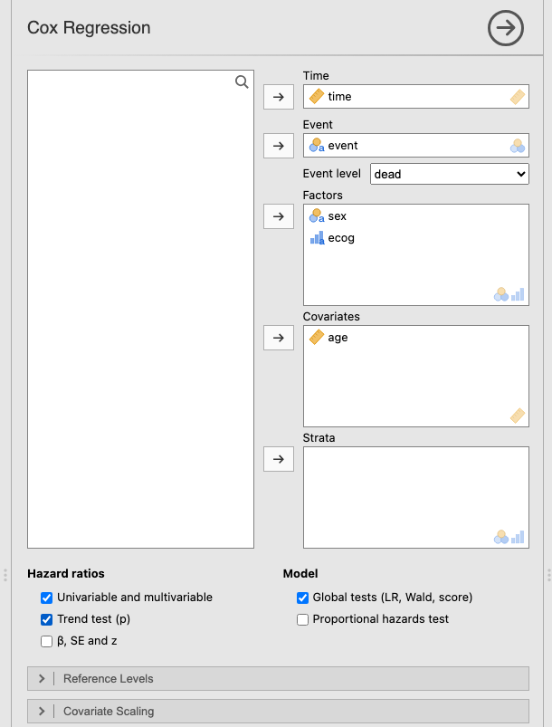
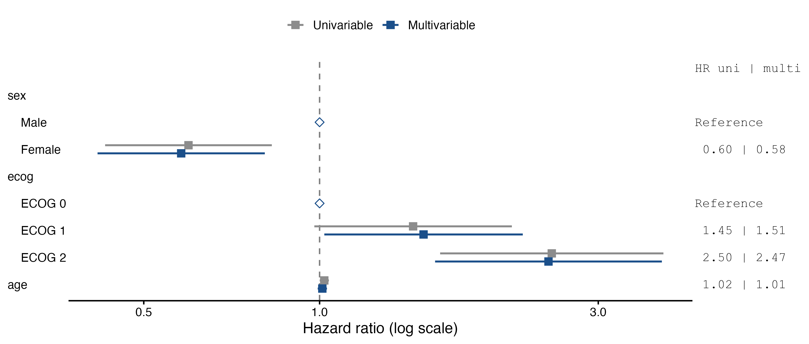

jamovi syntax
r <- prognosis::cox(data = lung, elapsed = time, event = event, eventLevel = "dead",
factors = vars(sex, ecog), covs = age, uniMulti = TRUE, trend = TRUE,
showExplanations = TRUE)Question. The Kaplan-Meier example showed that survival falls with worse ECOG. Does ECOG still predict survival once age and sex are taken into account? And are age and sex prognostic themselves?
Open Analyses → Prognosis → Cox Regression and set:
| Panel | Setting |
|---|---|
| Time | time |
| Event | event; Event level dead |
| Factors | sex, ecog |
| Covariates | age |
| Hazard ratios | Univariable and multivariable; Trend test (p) |
| Model | Global tests (LR, Wald, score) (on by default) |
| Options | Show explanations |

The results appear once the time, the event level and at least one factor or covariate are set. The module uses the patients with no missing value in any model variable; if some are excluded, a note under the model summary says how many. Here all 226 patients are complete. The univariable models are fitted on the same patients as the multivariable one, so the two columns are comparable.
Model summary
| 95% CI | ||||
|---|---|---|---|---|
| N | Events | C-index | Lower | Upper |
| 226 | 163 | 0.635 | 0.585 | 0.684 |
| Note. C-index: probability that, of two patients, the one who has the event first has the higher predicted risk (0.5 = chance, 1 = perfect). | ||||
Global tests
| χ² | df | p | |
|---|---|---|---|
| Likelihood ratio | 28.9 | 4 | < .001 |
| Wald | 28.6 | 4 | < .001 |
| Score (log-rank) | 29.7 | 4 | < .001 |
| Note. H0: all hazard ratios in the model are 1. | |||
163 deaths among 226 patients support the four coefficients of this model comfortably (about 41 events per coefficient).
The C-index is 0.635: for two patients whose order of death is known, the model gives the higher risk to the one who died first 63% of the time (chance would be 50%). That is modest, and typical for a few clinical variables.
The three global tests agree (likelihood ratio χ² = 28.9 on 4 df, p < 0.001): at least one of the variables is associated with survival. Report one of them, usually the likelihood-ratio test.
Hazard ratios
| Univariable | Multivariable | ||||||||||
|---|---|---|---|---|---|---|---|---|---|---|---|
| HR | Lower | Upper | p | p trend | HR | Lower | Upper | p | p trend | ||
| sex | Male | 1.000 | .002 | .002 | 1.000 | .001 | |||||
| Female | 0.596 | 0.429 | 0.828 | .002 | 0.579 | 0.417 | 0.806 | .001 | |||
| ecog | ECOG 0 | 1.000 | < .001 | < .001 | 1.000 | < .001 | |||||
| ECOG 1 | 1.446 | 0.979 | 2.134 | .064 | 1.507 | 1.019 | 2.228 | .040 | |||
| ECOG 2 | 2.498 | 1.608 | 3.878 | < .001 | 2.465 | 1.577 | 3.855 | < .001 | |||
| age | per unit | 1.019 | 1.000 | 1.037 | .046 | 1.011 | 0.993 | 1.029 | .247 | ||
| Note. HR > 1: higher hazard (worse prognosis) than the reference level, or per one-unit increase of a covariate. Multivariable HRs are adjusted for the other variables in the model. Univariable: each variable alone; on the reference row, p of the Wald test for the whole variable. p trend: the factor entered as a numeric score (level order); multivariable trend keeps the other variables as in the model. | |||||||||||
How to read it:
Male and ECOG 0 are the reference levels (the first level of each factor): HR = 1 by definition, no CI. In the univariable columns, the p on the reference row is the Wald test of the whole variable (for ECOG, 2 df: do the three levels differ?), and p trend is the 1-df test of a steady change along the levels.The first level of a factor is its reference. To compare against another level (for example to report men versus women), open the variable’s Setup in the Data tab and move that level to the top. The HR becomes its reciprocal, 1/0.58 = 1.73, the CI limits are inverted in the same way, and the p-values do not change.
“1.019 per year” is correct but hard to grasp. Open Covariate Scaling, which lists every covariate, and set age to per 10 units:
Hazard ratios
| Univariable | Multivariable | |||||||||||
|---|---|---|---|---|---|---|---|---|---|---|---|---|
| HR | Lower | Upper | p | HR | Lower | Upper | p | β | SE | z | ||
| sex | Male | 1.000 | .002 | 1.000 | ||||||||
| Female | 0.596 | 0.429 | 0.828 | .002 | 0.579 | 0.417 | 0.806 | .001 | -0.546 | 0.1682 | -3.24 | |
| ecog | ECOG 0 | 1.000 | < .001 | 1.000 | ||||||||
| ECOG 1 | 1.446 | 0.979 | 2.134 | .064 | 1.507 | 1.019 | 2.228 | .040 | 0.410 | 0.1996 | 2.05 | |
| ECOG 2 | 2.498 | 1.608 | 3.878 | < .001 | 2.465 | 1.577 | 3.855 | < .001 | 0.902 | 0.2281 | 3.96 | |
| age | per 10 units | 1.203 | 1.004 | 1.442 | .046 | 1.114 | 0.928 | 1.337 | .247 | 0.108 | 0.0931 | 1.16 |
The age row now reads per 10 units: the crude HR is 1.20 per 10 years of age (1.203 = 1.01910), the adjusted one 1.11. The module divides age by 10 before fitting, so only the unit changes: the p-values, the other HRs and the model tests are the same as before. Per 1 SD does the same with the standard deviation of the variable, which helps to compare continuous variables measured in different units.
This run also ticked β, SE and z, the columns behind each HR: \(\mathrm{HR} = e^{\beta}\), its 95% CI is \(e^{\beta \pm 1.96\,\mathrm{SE}}\), and \(z = \beta/\mathrm{SE}\) gives the p-value. For ECOG 2, \(e^{0.902} = 2.47\) and \(e^{0.902 \pm 1.96 \times 0.228}\) gives 1.58–3.86.
Tick Forest plot under Plots. With Univariable and multivariable on, it shows both estimates for each row:

The log scale makes HR = 0.5 and HR = 2 equally far from 1, as they should be: halving and doubling the hazard are effects of the same size.
In a Cox model including sex, age and ECOG performance status (226 patients, 163 deaths), survival was worse with higher ECOG: HR 1.51 (95% CI 1.02–2.23) for ECOG 1 and 2.47 (95% CI 1.58–3.86) for ECOG 2, compared with ECOG 0 (p for trend < 0.001). Women had a lower hazard of death than men, HR 0.58 (95% CI 0.42–0.81). Age was associated with survival in the univariable analysis, HR per 10 years 1.20 (95% CI 1.00–1.44), but not after adjustment, 1.11 (95% CI 0.93–1.34). The model C-index was 0.63.
Before trusting these numbers, check the proportional-hazards assumption: Assumptions.